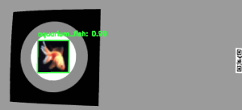
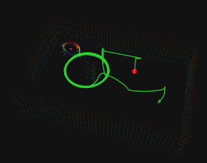

微型无人机
中国机器人及人工智能大赛 · CRAIC · 2026.07
项目概述
比赛中的目标是放在现实场地里的 CIFAR-100 图片打印件。我参与了靶标识别和实机部署，飞行任务沿用已有的起飞、绕圈流程。
- 参与工作
- CIFAR-100 靶标识别 · 实机部署
- 团队成果
- 国家级一等奖
我参与的部分
- 参与 CIFAR-100 靶标识别与实机部署。
- 沿用已有的任务控制流程，完成起飞与绕圈飞行。
识别与飞行效果


中国机器人及人工智能大赛 · CRAIC · 2026.07
比赛中的目标是放在现实场地里的 CIFAR-100 图片打印件。我参与了靶标识别和实机部署，飞行任务沿用已有的起飞、绕圈流程。

